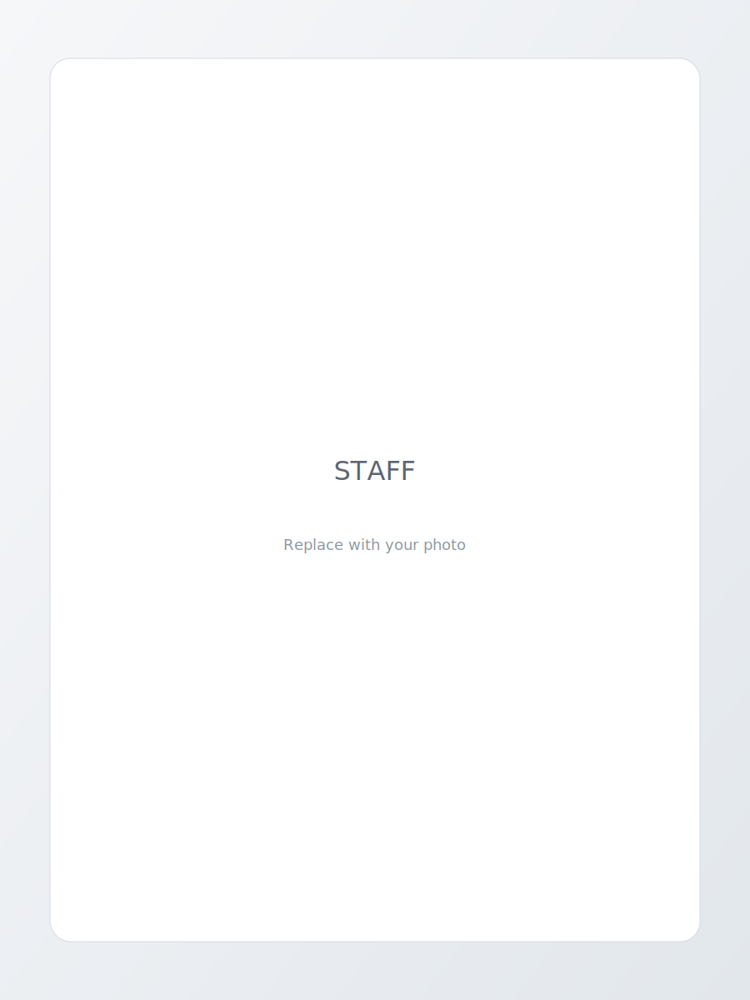

STAFF
スタッフ紹介
患者様に寄り添うために、経験と対話を大切にしたチームで診療を行っています。

経歴
- 松本歯科大学 卒業
- 明海大学PDI埼玉歯科診療所 研修医
- 明海大学PDI埼玉歯科診療所 特別契約職員
- 明海大学歯学部 機能保存回復学講座 助教
- 早稲田医学院歯科衛生士専門学校 講師
- 明海大学歯学部 臨床講師
- GCインプラントインストラクター
- Tokyo Society 講師
- 日本顎咬合学会 関東支部 理事
- 渋谷区歯科医師会 社会保険協力委員
所属学会
- 日本顎咬合学会
- 日本歯周病学会
- 日本補綴歯科学会
- 日本口腔インプラント学会
- 日本臨床歯周病学会
- 日本歯科医師会
- 日本口腔診断学会
- 日本歯科審美学会
認定資格
- 日本歯周病学会 歯周病専門医
- GCインプラントコース 修了
- 日本顎咬合学会 認定医
- 歯科医師臨床研修指導歯科医
- インビザライン 認定医
- アソアライナー 認定医
矯正歯科認定医
宮下 貴代 Kayo Miyashita
矯正歯科を担当しています。歯並びは見た目だけでなく、口腔環境や全身の健康にも関わることがあるため、 まずは現状の把握とゴールの共有を重視しています。
生活スタイルやご希望に合わせて、無理のない治療計画を一緒に考えます。気になることはお気軽にご相談ください。
経歴
- 日本歯科大学 卒業
- 日本歯科大学付属病院 臨床研修医課程修了
- 複数の診療所で矯正担当医として非常勤勤務
- 日本成人矯正歯科学会 常務理事
- T.O.P.S. DENTAL CLINIC 非常勤勤務
所属学会
- 日本成人矯正歯科学会
- 日本矯正歯科学会
- 日本健康医療学会
認定資格
- 日本成人矯正歯科学会 認定医
歯科医師
寺本 秀和 Hidekazu Teramoto
一般歯科を中心に担当しています。大学病院での口腔外科研修を通じて、虫歯治療からインプラントまで幅広い 知識と技術の研鑽を積みました。
患者様の不安を軽減できるよう、丁寧な説明と痛みに配慮した対応を心がけています。 かみ合わせや歯周組織の治療についてもご相談ください。
経歴
- 北海道医療大学 卒業
- 京都府立医科大学附属病院 臨床研修修了
- 都内歯科クリニック 勤務
- T.O.P.S. DENTAL CLINIC 常勤勤務
所属学会
- 日本顎咬合学会
診療の姿勢
- 患者様の不安を減らす説明を重視
- 痛みに配慮した麻酔を心がける
- 長期的な口腔健康の維持を目指す
スタッフフォト
院内の雰囲気やスタッフの様子をご覧ください。